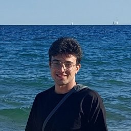

Reza Sajjadinasab
PhD Candidate, Computer Engineering · Boston University
I build AI that learns efficiently when every attempt is costly, and I study how far we can trust what it has learned. My work spans reinforcement learning for autonomous driving and machine learning for compilers.

About
I am a Computer Engineering PhD candidate at Boston University, co-advised by Prof. Martin Herbordt and Prof. Eshed Ohn-Bar, and I expect to graduate in August 2027. My compiler research is a collaboration with Red Hat, mentored by Sanjay Arora and Ulrich Drepper. Before BU, I studied Electrical Engineering at Sharif University of Technology, with a focus on digital systems.
I am open to research and engineering roles in machine learning, reinforcement learning, compilers, and systems.
Research
Reinforcement learning for driving
Self-driving AI usually learns by copying human drivers. I build methods that let it keep improving through its own practice without forgetting what it already knew, so it stays safe in situations it has never seen. It reaches the level of the best published camera-only systems, trained on a modest research budget.
Machine learning for compilers
A compiler turns code into a working program, and its settings change how small or fast that program is. I build AI that predicts the right settings for each program, so its very first guess already beats the compiler's standard choice, saving many slow trial builds.
Publications
Under review
Published
-Oz.Full list on Google Scholar. Undergraduate papers appear under the name Sayed Reza Sajadi.
Education
Contact
The best way to reach me is by email at sajjadi@bu.edu.